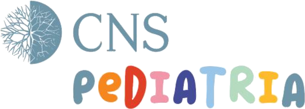

Onde me encontrar
Três contextos distintos
A prática clínica com crianças e famílias decorre exclusivamente em contexto institucional. À distância, o trabalho limita-se à supervisão de colegas e às consultas ao abrigo do Cheque Cuida-te.
Onde me encontrar
Três contextos distintos
A prática clínica com crianças e famílias decorre exclusivamente em contexto institucional. À distância, o trabalho limita-se à supervisão de colegas e às consultas ao abrigo do Cheque Cuida-te.
Prática clínica

Consulta de psicologia, crianças e adolescentes, na Unidade de Pediatria do CNS — Campus Neurológico.
Avaliação, intervenção e acompanhamento decorrem integralmente neste contexto.
Marcações através do CNS
Formulário de marcação — Psicologia Pediátrica
261 330 700 · cnscampus.com
Acompanhe a equipa em @cnspediatria
Supervisão a colegas
Supervisão individual e de grupo, consultoria de casos e orientação de estágio, em avaliação e intervenção no neurodesenvolvimento infantil.
Realiza-se à distância. Dirige-se a psicólogos e a outros técnicos, e a equipas que pretendam apoio na estruturação de respostas.
Supervisora clínica e orientadora de estágios reconhecida pela Ordem dos Psicólogos Portugueses
Pedido de contacto
Consultas gratuitas para jovens dos 12 aos 35 anos
Em breve. A adesão a esta medida está em processo de ativação. Enquanto isso, não são aceites pedidos por esta via — a informação abaixo descreve como funcionará.
Nesta prática, o acompanhamento ao abrigo do Cheque Cuida-te faz-se até aos 18 anos, por ser essa a faixa etária da intervenção. A medida abrange idades superiores, através de outros profissionais aderentes.
O Cheque Cuida-te dá acesso a consultas de psicologia sem custos para o jovem, no âmbito de uma medida do Instituto Português do Desporto e Juventude, que assegura o respetivo pagamento.
É este o único regime em que se realizam consultas à distância. Fora dele, a prática clínica decorre exclusivamente no CNS. Não são aceites pedidos de consulta privada online, nem de orientação parental ou avaliação nesta modalidade.
O que o cheque cobre
- Ansiedade, humor depressivo, stress ou sofrimento emocional persistente
- Dificuldades relacionais, conflitos familiares, solidão ou isolamento
- Adaptação a novos contextos, luto, separações e ruturas
- Orientação vocacional e gestão de carreira
- Transições próprias do jovem adulto
- Impacto psicológico de doença crónica
O que o cheque não cobre
- Perturbações do neurodesenvolvimento, necessidades educativas especiais ou deficiência, quando exijam planos de intervenção estruturados
- Situações de risco suicidário ou perturbação mental grave, que requerem resposta clínica integrada
- Situações cujo foco principal não seja psicológico
Os cheques são pedidos pelo próprio em gov.pt, com Chave Móvel Digital. Até aos 18 anos é necessária autorização dos representantes legais.
Antes de marcar, vale a pena ler
Há situações que não são acompanhadas à distância, condições de utilização a conhecer, e limites próprios de cada modalidade. Está tudo reunido numa página, em linguagem clara.